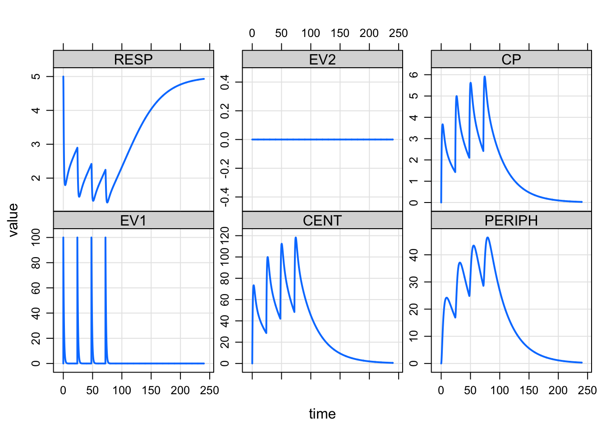

Simulate from PKPD & QSP models in R 
mrgsolve is an R package for simulation from hierarchical, ordinary differential equation (ODE) based models typically employed in drug development.
mrgsolve is free, open-source software
mrgsolve is distributed as a package for R and utilizes an ODE-solver from ODEPACK which is freely-available in the public domain. We develop mrgsolve on github, with input and contributions from the pharmacometrics modeling and simulation community. We welcome feature requests and bug reports on the GitHub site issue tracker.
Documentation
- User Guide: In-depth description and discussion about how
mrgsolveworks, including code block reference - R documentation: All
mrgsolvedocumentation that you would find in theRhelp system - Vignettes: Package vignettes
- Quick hit demos: Features that you might have a hard time finding in other documentation
Links and Resources
- GitHub Page: Browse source code, find useful examples, get help installing, report issues
mrgsolvehome on CRAN- Site navagation: A listing of all tagged content on this site, including blog posts and other help / demonstration content
- Metrum Research Group: Our main website
An example
The following is a simple example to illustrate the basics of how mrgsolve works. You can find more examples and usage vignettes in the links above or in the “Help Topics” menu in the nav bar at the top of the mrgsolve.github.io main page.
library(mrgsolve)First, a model object is created. As an introduction, we will use a pre-coded model from an internal library.
mod <- mread("irm1", modlib())An overview about this model
mod.
.
. ------------ mrgsolve model object (unix) ------------
. project: /Users/kyleb/Rli...gsolve/models
. source: irm1.cpp
. shared object: irm1-so-5837272bcdc6
.
. time: start: 0 end: 24 delta: 1
. add: <none>
. tscale: 1
.
. compartments: EV1 CENT PERIPH RESP EV2 [5]
. parameters: CL V2 Q V3 KA KA2 KIN KOUT IC50 IMAX n
. VMAX KM [13]
. omega: 0x0
. sigma: 0x0
.
. solver: atol: 1e-08 rtol: 1e-08
. maxsteps: 5000 hmin: 0 hmax: 0Next, let’s create an intervention for the model. We do this with an event object.
e <- ev(amt=100, ii=24, addl=3)Now, we simulate with our model object (mod) and the event object (e)
out <- mod %>% ev(e) %>% mrgsim(end=240,delta=0.1)
out. Model: irm1
. Dim: 2402 x 8
. Time: 0 to 240
. ID: 1
. ID time EV1 CENT PERIPH RESP EV2 CP
. [1,] 1 0.0 0.00 0.000 0.00000 5.000 0 0.0000
. [2,] 1 0.0 100.00 0.000 0.00000 5.000 0 0.0000
. [3,] 1 0.1 90.48 9.444 0.04781 4.903 0 0.4722
. [4,] 1 0.2 81.87 17.851 0.18294 4.688 0 0.8926
. [5,] 1 0.3 74.08 25.323 0.39390 4.426 0 1.2662
. [6,] 1 0.4 67.03 31.953 0.67040 4.151 0 1.5977
. [7,] 1 0.5 60.65 37.824 1.00324 3.882 0 1.8912
. [8,] 1 0.6 54.88 43.013 1.38417 3.628 0 2.1507And plot
plot(out) 
The source code for this model:
$PROB
# Model: `irm1`
- Indirect response model, type 1
- Inhibition of response input
- Two-compartment PK model
- Optional nonlinear clearance
- Source: `mrgsolve` internal library
- Date: `r Sys.Date()`
- Version: `r packageVersion("mrgsolve")`
$PARAM @annotated
CL : 1 : Clearance (volume/time)
V2 : 20 : Central volume (volume)
Q : 2 : Inter-compartmental clearance (volume/time)
V3 : 10 : Peripheral volume of distribution (volume)
KA : 1 : Absorption rate constant 1 (1/time)
KA2 : 1 : Absorption rate constant 2 (1/time)
KIN : 10 : Response in rate constant (1/time)
KOUT : 2 : Response out rate constant (1/time)
IC50 : 2 : Concentration for 50% of max inhibition (mass/volume)
IMAX : 1 : Maximum inhibition
n : 1 : Emax model sigmoidicity
VMAX : 0 : Maximum reaction velocity (mass/time)
KM : 2 : Michaelis constant (mass/volume)
$CMT @annotated
EV1 : First extravascular compartment (mass)
CENT : Central compartment (mass)
PERIPH : Peripheral compartment (mass)
RESP : Response compartment
EV2 : Second extravascular compartment (mass)
$GLOBAL
#define CP (CENT/V2)
#define CT (PERIPH/V3)
#define CLNL (VMAX/(KM+CP))
#define INH (IMAX*pow(CP,n)/(pow(IC50,n)+pow(CP,n)))
$MAIN
RESP_0 = KIN/KOUT;
$ODE
dxdt_EV1 = -KA *EV1;
dxdt_EV2 = -KA2*EV2;
dxdt_CENT = KA *EV1 + KA2*EV2 - (CL+CLNL+Q)*CP + Q*CT;
dxdt_PERIPH = Q*CP - Q*CT;
dxdt_RESP = KIN*(1-INH) - KOUT*RESP;
$CAPTURE @annotated
CP : Plasma concentration (mass/volume)mrgsolve: mrgsolve.github.io | Metrum Research Group: metrumrg.com